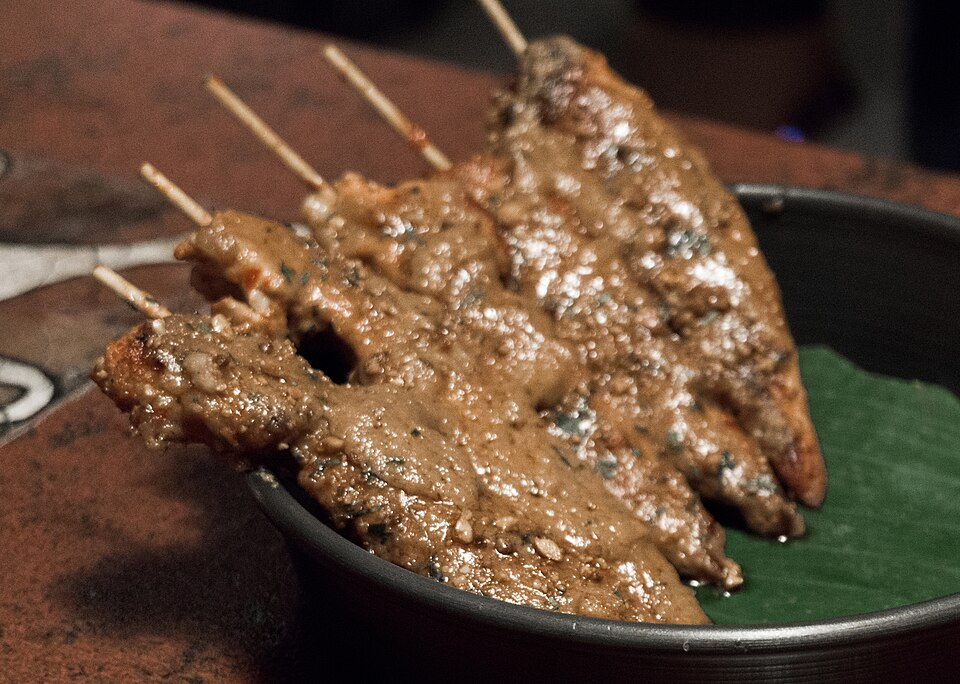

Pure Tamarind Reduction
Our Pad Thai glaze balances sour sour tamarind pulp with warm caramelized palm sugar and premium fish sauce, creating authentic amber complexity.
From Bangkok night markets to Charlotte’s most cherished Thai tables, street food delicacies require razor-sharp technique. At Thai House, our Pad Thai is defined by real tamarind pulp and palm sugar reductions—never ketchup or artificial dyes—tossed with plump shrimp, fresh sprouts, and crushed peanuts alongside charred chicken satay skewers.

Handmade daily appetizers and legendary wok noodles.
Our Pad Thai glaze balances sour sour tamarind pulp with warm caramelized palm sugar and premium fish sauce, creating authentic amber complexity.
Chicken skewers marinated overnight in turmeric, garlic, and coconut cream, char-grilled over open flames, and served with house warm peanut dip.
Simmering lemongrass, sliced galangal, kaffir lime leaves, and fresh lime juice to create vibrant, restorative soups that clear the mind.

Every plate of Pad Thai must feature distinct textures: chewy rice noodles, succulent plump shrimp, crispy raw bean sprouts, tender scrambled eggs, and crunchy roasted peanuts. Squeeze fresh lime juice across the top to complete Thailand’s most iconic culinary masterpiece.
Explore Noodle Selections →